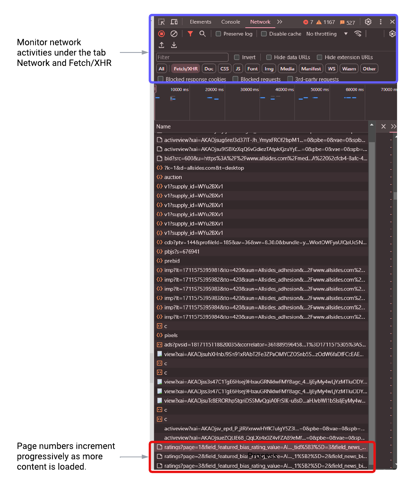
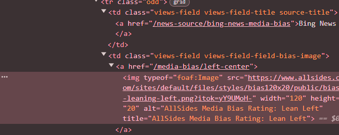
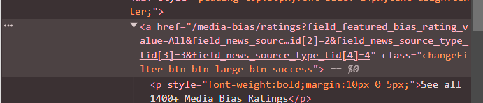

base_url <- "https://www.allsides.com/media-bias/ratings?page="
params <- "&field_featured_bias_rating_value=All&field_news_source_type_tid%5B0%5D=2&field_news_bias_nid_1%5B1%5D=1&field_news_bias_nid_1%5B2%5D=2&field_news_bias_nid_1%5B3%5D=3&title="
page_num <- 0
has_content <- TRUEIntroduction
In my recent analysis of how news headlines on artificial intelligence (AI) vary across media outlets with different ideological leanings, I stumbled upon an interesting data source provided by the AllSides organization, which contains over 1,000 human-curated ratings of media outlets’ ideological leanings from left to right.
Several studies (e.g. Rozado et al. 2022, Yi et al. 2023) have relied on its annual Media Bias Chart, as shown below, to capture a slice of the full spectrum of media perspectives. It displays around 60 exemplary media outlets for each category, enabling users to easily reference and document this ideological landscape with minimal effort.
However, a deeper dive into how media covers AI topics requires a more exhaustive list of media ratings beyond this snapshot. This task confronts several challenges. The webpage’s dynamic nature, which prompts users to click the See all 1400+ Media Bias Ratings button to load additional content, introduces complexity to data collection. The absence of clear markers for the total number of pages, entries, or an endpoint further complicates this task.
In this blog post, I will share my experience scraping this dynamic webpage using R, with two distinct approaches.
Pattern Observation and Looping
The first approach involves observing the URL structure or pagination pattern of a website and looping through these patterns to scrape data. It’s particularly effective for websites with a predictable and consistent structure, such as incrementing IDs or query parameters in URLs that lead to different pages of content.
My workflow includes the following steps:
Inspect the website: We can right-click and select
Inspecton a webpage, which allows us to access the webpage’s structure and its network activities.Interact with the website and observe changes: By engaging with the website, such as clicking a button or scrolling down to load more content, we can observe how the website dynamically fetches additional data.
Monitor network activity: Under the Network and the Fetch/XHR tabs, we can monitor asynchronous requests made by the webpage after the initial page load, which is particularly crucial for scraping dynamic websites where content is not available in the initial HTML.
Identify patterns: We can then examine the Name column (or the request URLs) for patterns, especially those indicating page changes or content loading mechanisms.
The screenshot below shows the network activities I observed after inspecting the webpage. By navigating to the Network and Fetch/XHR tabs, I monitored the network requests that occurred when interacting with the website. My interactions involved scrolling down to the bottom of the page and clicking a button to load more content. During this process, I identified recurring URL patterns that indicate page changes (e.g. page=1,2,3…), highlighted in the red box. These patterns are key to extracting content by programmatically looping through the pages.

I recorded these URL patterns below with the page number being the parameter.
Knowing how to automatically load more pages, we can then switch to extracting the specific content of interest. In this case, I am interested in media outlets and their corresponding ideological leanings. To do this, I hover over the desired content, right-click, and choose Inspect to locate it under the Elements tab.
The rvest package in R provides several useful functions to extract information after parsing HTML content. html_elements() is used to select elements based on their attributes, classes, IDs, and so on. html_attr() can extract the value of a specific attribute from an HTML element, which is useful for getting data held in attributes like “href” (links), “src” (images), or others.
For instance, this is what I observed upon inspecting the element related to media leanings.

I identified its parent class .views-field-field-bias-image a img and its attribute alt. The following code snippet demonstrates how to extract names and leanings of media outlets based on these identified elements.
library(rvest)
library(tidyverse)
# Load the webpage content
page <- read_html(current_url)
# Extract names of media outlets
news_source <- page %>%
html_elements(".view-content .views-field-title a") %>%
html_text()
# Extract leanings of media outlets
media_rating <- page %>%
html_elements(".views-field-field-bias-image a img") %>%
html_attr("alt")Once this is done, the final step is just to construct a stopping rule for this scraper when no more content is available. This can be done using a while-loop plus an if-else check. Here’s the pseudo-code:
while(has_content){
page <- ...
news_source <- ...
media_rating <- ...
# Check if the page has content
if (length(news_source) == 0) {
has_content <- FALSE
print("No more content.")
} else {
news_sources[[page_num + 1]] <- news_source
media_ratings[[page_num + 1]] <- media_rating
print(paste("Page", page_num, "scraped successfully."))
page_num <- page_num + 1
}
}The whole process is extremely fast (I got 1609 entries in ~20s!), and it’s also straightforward to implement this approach once we identify page loading patterns and locations of relevant HTML elements. The complete code can be found here.
Automation Tools Like RSelenium
An alternative approach is to use automation tools like RSelenium, which facilitates the automation of web browsers to mimic human interactions on websites, such as logging in, clicking buttons, and so on. This is my first time playing with this tool, and I found it more flexible compared to the former approach, especially when page loading patterns are not evident, and it typically does not require in-depth HTML inspection. However, a notable downside is the complexity of its setup, and it also tends to be slower and more resource-intensive as it involves launching and controlling a web browser session.
The process includes the following steps:
Navigate to the webpage: We need to launch a web browser and direct it to the desired webpage.
Interact with the webpage to load more content: We can program the browser to mimic user actions, such as scrolling through pages and clicking buttons, to ensure all relevant content is loaded.
Extract the desired elements: Upon fully loading the pages, we can retrieve elements of interest from the webpage
When setting up RSelenium, I found it helpful to (1) place the web browser driver (I used chromedriver.exe) in the same folder as the script, which makes it easier for R to locate and initiate the web browser; and (2) set chromever = NULL, which enables automatically detecting the appropriate version of the web driver installed.

The following code initiates a Chrome web browser session, navigate to the webpage of interest, and click a button to load more content. remDr (remote driver object) is used to interact with the web browser - to identify the button from the CSS selector and simulate a click action. As before, we can inspect the button and find its class, as depicted in the screenshot above.
library(RSelenium)
# Start a web browser
rD <- rsDriver(browser = "chrome", port = 4544L, chromever = NULL)
remDr <- rD[["client"]]
# Navigate to the webpage
remDr$navigate("https://www.allsides.com/media-bias/ratings")
# Function to attempt clicking a "Load More" button
attemptLoadMore <- function() {
tryCatch({
button <- remDr$findElement(using = 'css selector', value = '.changeFilter.btn.btn-large.btn-success, .load-more-button-selector') # Combine selectors if possible
button$clickElement()
Sys.sleep(2) # Wait for content to load
TRUE
}, error = function(e) { FALSE })
}
# Initial click to load more content
attemptLoadMore()The next interaction we need to mimic is to scroll down the webpage and click the button until no new content is loaded. How can we determine when to stop? One way to do this is to record the current scrollable height of the webpage body and continue the clicking behavior until the height does not change, as presented below.
# Scroll and attempt to load more until no new content loads
repeat {
last_height <- remDr$executeScript("return document.body.scrollHeight;")
remDr$executeScript("window.scrollTo(0, document.body.scrollHeight);") # Scroll to the bottom of the page
Sys.sleep(3)
# Check for new scroll height and attempt to load more if scrolled to bottom
new_height <- remDr$executeScript("return document.body.scrollHeight;")
if (last_height == new_height && !attemptLoadMore()) { # && prioritizes the first condition
break
}
}Once all entries are loaded, we can use rvest as before to retrieve the elements of interest. The full script can be accessed here.
To summarize, the two web scraping approaches primarily differ in their sequence of actions and the logic behind page loading.
The first method sequentially loads and extracts data page by page, leveraging identifiable patterns in page requests for navigation.
The second method loads all relevant pages first before proceeding with data extraction, and simulates user interactions to trigger page loads.
The first approach can be faster but requires more in-depth observation of page loading patterns, and the second provides a more flexible solution for interacting with web pages, especially when direct patterns are not apparent. I hope you find this post informative and helpful!